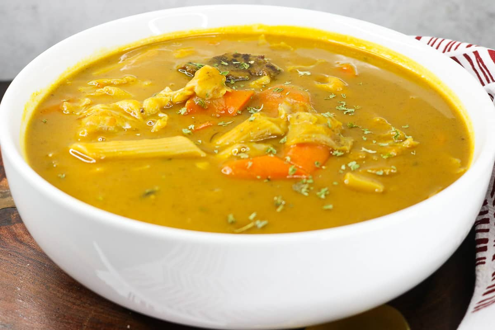

Odin Recipes
Soup joumou
Soup joumou

How to make Soup joumou
On January 1st, we celebrate a new year and Haiti's independence. Haiti was the first and only country to have successfully revolted against slavery. Our pride in our history is celebrated each year with a traditional pumpkin soup known as Soup Joumou.
Ingredients
- 1 lb of beef
- 1/2 cup of olive oil
- water as needed
- 1 large scallions, diced
- 1 half medium cabbage, diced
- 2 potatoes, peeled and chopped
- 2 yams, peeled and chopped
- 2 malangas, peeled and chopped
- 2 butternut squash, peeled and chopped
- 2 turnips, peeled and chopped
- 1 stalk of celery chopped
- 3 medium carrots, chopped
- 1 6 oz. package of spaghetti
- 1 tablespoon of tomato paste
- 1 scotch bonnet pepper
- 4 parsley sprigs
Seasoning the meat
- 1 tsp black pepper
- 1 tsp thyme
- 2 shallots, diced
- 1 tsp seasoning salt
- 2 chicken bouillon cubes
- 1 tsp garlic powder
- 1 tsp onion powder
- 2 tsp epis
Steps
- In a separate bowl, cut into small pieces the large scallions and half medium cabbage.
- Peel & chop the potatoes, yams, malanga, butternut squash, carrots, and turnip.
- Wash the vegetables. In a separate pot, boil water and add the vegetables. Cover and cook over high heat for about an hour.
- Reduce heat and add scotch bonnet pepper.
- Once the squash is fully cooked, remove it from the pot. Use some of the cooking water to blend the squash into a purée.
- Strain the purée through a fine sieve set over a bowl. Press it through with a spoon or rubber spatula.
- For best flavoring, pour the cooked vegetables, the squash purée and cooking liquid into the pot that cooked the meat.
- Roll into a small log
- Cut the dough into 4 even pieces.You can make the patties as big or small as you'd like. We cut our dough into 4 pieces.
- Add parsley, thyme, and broken spaghetti (or substitute with macaroni).
- Let it all cook, until tender.
- Combine meat into soup. Serve hot.